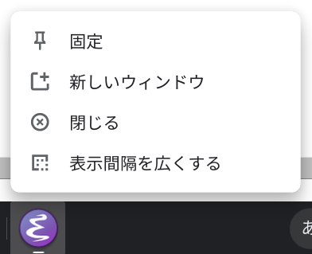

ChromebookでEmacsを使う
環境
このページの内容は Lenovo IdeaPad Duet Chromebook で動作を確認しています。
Emacsのインストール
以下のコマンドを実行してEmacsをインストールします。
sudo apt-get update
sudo apt-get install emacs
mozcなどのインストール
以下のコマンドを実行します。 mozcは日本語入力用IMEです。 emacs-mozcやemacs-mozc-binはmozcをEmacsで使用するためのパッケージです。
sudo apt-get install mozc emacs-mozc emacs-mozc-bin
Emacsの設定
Packageのインストール
~/.emacs.d/init.el に以下の設定を記述します。
;;; package
(require 'package)
(add-to-list 'package-archives '("melpa" . "https://melpa.org/packages/"))
(add-to-list 'package-archives '("marmalade" . "https://marmalade-repo.org/packages/"))
(package-initialize)
デフォルトフォントの設定
~/.emacs.d/init.el に以下の設定を記述します。
フォントのサイズは -10 の数字で指定できます。
インストールされているフォントは fc-list コマンドで調べられます。
;;; frame
(setq default-frame-alist
'((font . "Noto Sans Mono CJK JP-10")))
mozcの設定
~/.emacs.d/init.el に以下の設定を記述します。
;;; mozc
(require 'mozc)
(set-language-environment "Japanese")
(setq default-input-method "japanese-mozc")
(prefer-coding-system 'utf-8)
;; かなキー，英数キーでIMEのON/OFFを設定できるようにする
(global-set-key [henkan]
(lambda ()
(interactive)
(when (null current-input-method) (toggle-input-method))))
(global-set-key [muhenkan]
(lambda ()
(interactive)
(inactivate-input-method)))
(defadvice mozc-handle-event (around intercept-keys (event))
(if (member event (list 'zenkaku-hankaku 'muhenkan))
(progn
(mozc-clean-up-session)
(toggle-input-method))
(progn
ad-do-it)))
(ad-activate 'mozc-handle-event)
;; IME ON/OFF時にカーソル色を変更
(add-hook 'input-method-activate-hook (lambda () (set-cursor-color "orange")))
(add-hook 'input-method-inactivate-hook (lambda () (set-cursor-color "black")))
mozcの変換候補表示の設定
emacs-mozcのデフォルトの設定では変換候補表示時の入力ラグが大きいので，mozc-popupを使うように設定します。
mozc-popupのインストール
まずEmacsで M-x を押して package-install と入力します。Install package: と表示されるので mozc-popup と入力します。
mozc-popupの設定
次に ~/.emacs.d/init.el に以下の設定を記述します。
;; 変換候補の表示にpopupを使用する
(require 'mozc-popup)
(setq mozc-candidate-style 'popup)
シェルフに登録
シェルフにEmacsを登録します。
emacs & コマンドを実行してEmacsを起動し，シェルフに固定します。

全画面表示させるための設定
2020/09/01現在，chromebookのlinuxのEmacsは起動時にウィンドウ位置を指定できないようです。
default-frame-alist に top や left を指定しても，
emacs コマンドの起動オプション -g を指定しても，表示位置には反映されません。
起動時のウィンドウサイズに応じて画面中央に表示されるように，勝手に位置調整されてしまいます。
このままでは使いにくいので，ここでは全画面にEmacsが表示されるように設定します。
.local/share/applications/emacs.desktop というファイルを作成して以下の内容を記述します。
解像度によっては全画面より小さく表示されるので，その場合は Exec=/usr/bin/emacs -g 200x50 の 200x50 の数字を大きくしてください。
[Desktop Entry]
Name=Emacs
GenericName=Emacs
Exec=/usr/bin/emacs -g 200x50
Icon=emacs24
Type=Application
Terminal=false
emacs.desktop ファイルを保存したら，以下のコマンドを実行します。
update-desktop-database
Emacsを終了してシェルフのボタンから起動し直すとEmacsが全画面サイズで表示されます。

mozcの設定
日本語入力システムであるmozcそのものの設定をします。
以下のコマンドを実行してmozcツールをインストールします。
sudo apt-get install mozc-utils-gui
以下のコマンドで設定ツールを起動します。
/usr/lib/mozc/mozc_tool --mode=config_dialog &
mozcでEmacsキーバインドを使えるように設定
https://github.com/proshunsuke/mozc-emacs の keymap-emacs.txt をダウンロードします。
以下のコマンドで設定ツールを起動します。
/usr/lib/mozc/mozc_tool --mode=config_dialog &
Keymap style を Custom keymap にして，Customize... ボタンを押下します。
表示されたダイアログの左下にある Edit > Import from file... でダウンロードした keymap-emacs.txt を選択します。
以上